TD Analyse de données Single Cell RNA-seq sous R - Package Seurat
Ghislain Bidaut, Plateforme Cibi, CRCM, Aix-Marseille Université
Novembre 2025

1 Introduction
Dans ce TD, nous allons faire une analyse de données Single Cell sous R.
Ces données sont présentées dans la publication par Steele et al: Multimodal mapping of the tumor and peripheral blood immune landscape in human pancreatic cancer. Nature Cancer 1, pp 1097–1112 (2020).
L’objectif de l’analyse est d’identifier le paysage immunitaire dans les adénocarcinomes ductal pancréatiques (PDAC).
Nous allons utiliser Seurat pour les étapes d’analyse suivantes:
- Chargement et contrôle qualité d’un échantillon
- Extraction des clusters et visualisation UMAP
- Interpretation des clusters - analyse interactive
- Extraction des gènes différentiellement exprimés - visualistion de clusters
2 Données
Les données relatives à cette publication sont disponibles sur le site de GEO sous le numéro d’accession GSE155698: https://www.ncbi.nlm.nih.gov/geo/query/acc.cgi?acc=GSE155698
2.1 Tableau récapitulatif des données
| GEO | Sample | Type |
|---|---|---|
| GSM4710689 | PDAC_TISSUE_1 | PDAC |
| GSM4710690 | PDAC_TISSUE_2 | PDAC |
| GSM4710691 | PDAC_TISSUE_3 | PDAC |
| GSM4710692 | PDAC_TISSUE_4 | PDAC |
| GSM4710693 | PDAC_TISSUE_5 | PDAC |
| GSM4710694 | PDAC_TISSUE_6 | PDAC |
| GSM4710695 | PDAC_TISSUE_7 | PDAC |
| GSM4710696 | PDAC_TISSUE_8 | PDAC |
| GSM4710697 | PDAC_TISSUE_9 | PDAC |
| GSM4710698 | PDAC_TISSUE_10 | PDAC |
| GSM4710699 | PDAC_TISSUE_11A | PDAC |
| GSM4710700 | PDAC_TISSUE_11B | PDAC |
| GSM4710701 | PDAC_TISSUE_12 | PDAC |
| GSM4710702 | PDAC_TISSUE_13 | PDAC |
| GSM4710704 | PDAC_TISSUE_15 | PDAC |
| GSM4710706 | AdjNorm_TISSUE_1 | Norm |
| GSM4710707 | AdjNorm_TISSUE_2 | Norm |
| GSM4710708 | AdjNorm_TISSUE_3 | Norm |
2.2 Environment
Charger la librairie Seurat.
Importance du set.seed() pour les étapes stochastiques
(PCA, clustering)!
#install.packages("Seurat")
library(Seurat)## Loading required package: SeuratObject## Loading required package: sp## 'SeuratObject' was built under R 4.5.0 but the current version is
## 4.5.1; it is recomended that you reinstall 'SeuratObject' as the ABI
## for R may have changed## 'SeuratObject' was built with package 'Matrix' 1.7.3 but the current
## version is 1.7.4; it is recomended that you reinstall 'SeuratObject' as
## the ABI for 'Matrix' may have changed##
## Attaching package: 'SeuratObject'## The following objects are masked from 'package:base':
##
## intersect, tset.seed(1234) # pour reproductibilité2.3 Récupération des données de comptage
Les données de Steele sont disponible sur le chemin:
/shared/projects/tp_2529_ngs_amu_181496/data/GSE155698_RAW".
3 Analyse de l’échantillon PDAC 1
Dans cette première partie, nous allons analyse uniquemeent l’échantillon PDAC_TISSUE_1.
3.1 Charger les données de l’échantillon PDAC 1 avec Seurat.
- Créer un objet Seurat et garder
- les cellules ayant au moins 200 gènes exprimés
- les gènes exprimés au moins dans 3 cellules
- Examiner la matrice de comptage: Examiner les gènes
NKG7,KRT18etPRSS1ainsi que le marqueurCD45sur les 30 premières cellules.
# Chemin des données d'entrée
# input_dir_pdac <- "/shared/projects/tp_2529_ngs_amu_181496/data/GSE155698_RAW/PDAC_TISSUE_1/filtered_feature_bc_matrix/"
input_dir_pdac <- "GSE155698_RAW/PDAC_TISSUE_1/filtered_feature_bc_matrix/"
# Charger les données avec Read10X
pdac.data <- Read10X(data.dir = input_dir_pdac)
# Créer l'objet Seurat
pdac.seurat <- CreateSeuratObject(counts = pdac.data, project = "PDAC", min.cells = 3, min.features = 200)
# Voir la matrice de comptage
pdac.data[c("PTPRC", "NKG7", "KRT18", "PRSS1"), 1:30]## 4 x 30 sparse Matrix of class "dgCMatrix"## [[ suppressing 30 column names 'AAACGAAAGTGGAAAG-1', 'AAACGAAGTAGGGTAC-1', 'AAACGAAGTCATAGTC-1' ... ]]##
## PTPRC . 1 . . 2 5 6 . . . . . 1 5 . . . . 15 . . 12 10 . .
## NKG7 . . . . 1 1 3 1 . . . . . . . . . . . 1 . 10 . . .
## KRT18 . 20 322 . . . 2 118 203 1 . . . 2 . . . 13 . 529 92 . . 1 80
## PRSS1 . . . 185 . . . . . . . 1133 . . . . 217 . . . . . . . .
##
## PTPRC 4 1 . . 9
## NKG7 41 . . . 3
## KRT18 . . . . .
## PRSS1 . . . 256 .# Taille de l'objet Seurat
pdac.seurat## An object of class Seurat
## 19273 features across 1410 samples within 1 assay
## Active assay: RNA (19273 features, 0 variable features)
## 1 layer present: counts3.2 Faire un contrôle qualité
Seurat permet de faire un contrôle qualité (QC) sur
- Le nombre de gènes par cellules: un nombre de gènes aberrant peut être un marqueur de “doublets” ou de gouttes vides.
- Le nombre de molécules uniques associée à une cellule
- Le poucentage de gènes associés avec la mitochondrie.
- Afficher les distributions de ces 3 valeurs
- Fixer les seuils acceptables sur ces distributions
- Les appliquer aux données.
# L'opérateur [[, ]] permet d"'ajouter des données d'annotation au meta data
pdac.seurat[["percent.mt"]] <- PercentageFeatureSet(pdac.seurat, pattern = "^MT-")
VlnPlot(pdac.seurat, features = c("nFeature_RNA", "nCount_RNA", "percent.mt"), ncol = 3)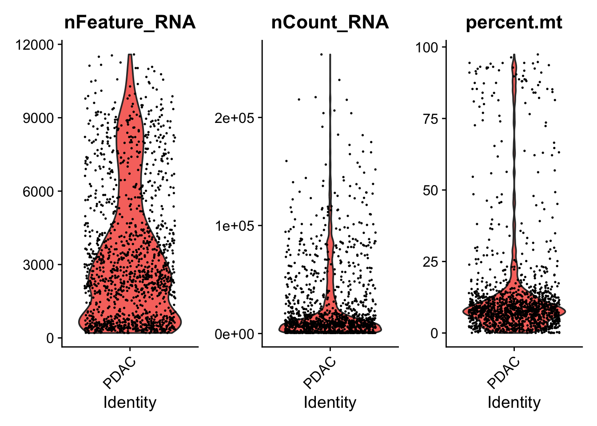
pdac.seurat <- subset(pdac.seurat, subset = nFeature_RNA > 200 & nFeature_RNA < 5000 & percent.mt < 15)
VlnPlot(pdac.seurat, features = c("nFeature_RNA", "nCount_RNA", "percent.mt"), ncol = 3)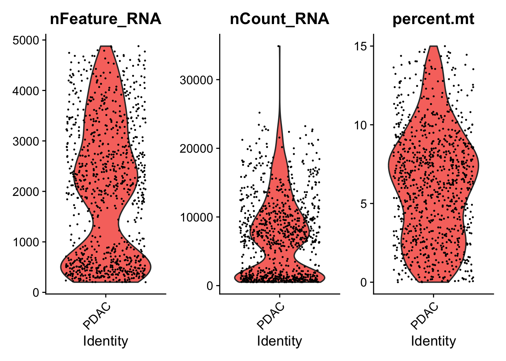
pdac.seurat## An object of class Seurat
## 19273 features across 928 samples within 1 assay
## Active assay: RNA (19273 features, 0 variable features)
## 1 layer present: counts3.3 Normalisation
Normalisez les données avec la méthode LogNormalize, en multipliant les valeurs par un facteur 10000 et en prenant le log du résultat.
3.3.1 Solution
pdac.seurat <- NormalizeData(pdac.seurat, normalization.method = "LogNormalize", scale.factor = 10000)## Normalizing layer: countspdac.seurat## An object of class Seurat
## 19273 features across 928 samples within 1 assay
## Active assay: RNA (19273 features, 0 variable features)
## 2 layers present: counts, data3.4 Préparation ACP étape 1: identification des gènes variables
Objectif: Il faut identifier les gènes présentant la plus grande variation entre cellules.
- Utiliser la fonction
FindVariableFeaturesavec la méthode “vst” en partiant de 2000 “features” (gènes). - Faire une représentation des gènes les plus variables en identifiant les 10 gènes les plus variables en les labellisant sur le graphique.
3.4.1 Solution
pdac.seurat <- FindVariableFeatures(pdac.seurat, selection.method = "vst", nfeatures = 2000)## Finding variable features for layer countstop10 <- head(VariableFeatures(pdac.seurat), 10)
plot <- VariableFeaturePlot(pdac.seurat)
plot <- LabelPoints(plot = plot, points = top10, repel = TRUE)## When using repel, set xnudge and ynudge to 0 for optimal resultsplot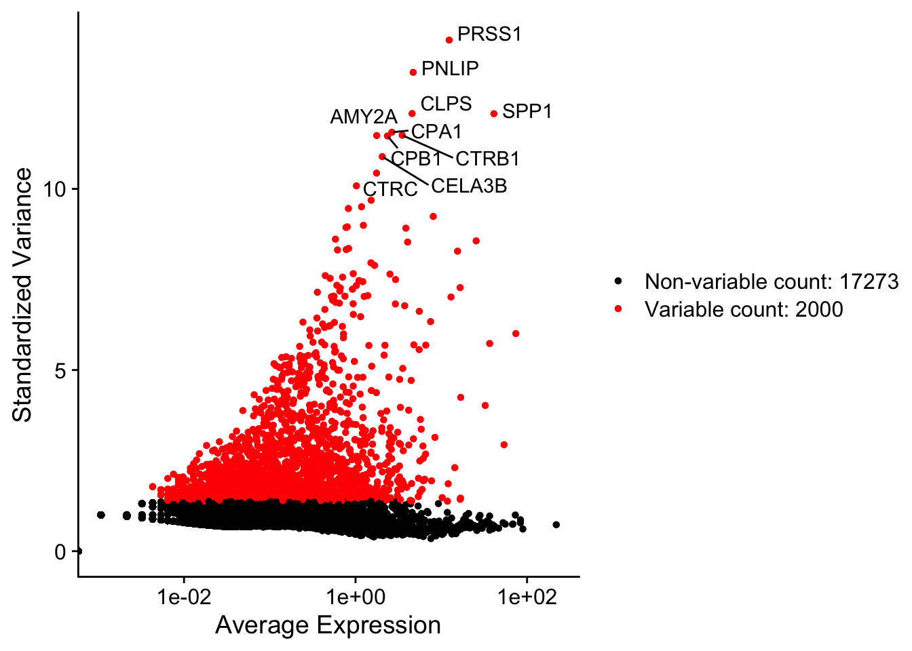
pdac.seurat## An object of class Seurat
## 19273 features across 928 samples within 1 assay
## Active assay: RNA (19273 features, 2000 variable features)
## 2 layers present: counts, data3.5 Préparation ACP étape 2: Mise à l’échelle des données
Nous avons besoin de standardiser:
- centrer et réduire l’expression de chaque gène dans la matrice de
comptage avec
ScaleData.
pdac.seurat <- ScaleData(pdac.seurat) ## Centering and scaling data matrixpdac.seurat## An object of class Seurat
## 19273 features across 928 samples within 1 assay
## Active assay: RNA (19273 features, 2000 variable features)
## 3 layers present: counts, data, scale.data3.6 Réduction de dimensions avec ACP
- Faire une réduction de dimensions par ACP sur les
gènes variables (fonction
VariableFeatures) - Afficher les 5 plus fortes contributions pour les 5 composants principaux
- Faire une représentation des loadings des 2 composants
principaux (fonction
VizDimLoadings) - Faire une représentation des données dans l’espace PC_1 vs PC_2
- Faire une représentation des données sous forme de Heatmap dans
l’espace des composants principaux grâce à
DimHeatmap
3.6.1 Solution
pdac.seurat <- RunPCA(pdac.seurat, features = VariableFeatures(object = pdac.seurat))## PC_ 1
## Positive: CTSB, CD68, TGFBI, GPNMB, MAFB, CTSL, CD163, GRN, LRP1, PSAP
## APOC1, FPR3, APOE, MSR1, NPC2, MS4A4A, HNMT, SCARB2, CD86, LHFPL2
## RNASE1, GPX1, LGMN, CREG1, CTSZ, MMP14, CTSH, CST3, SIGLEC1, DAB2
## Negative: CD7, CD247, CTSW, PRF1, CCL5, GZMA, SAMD3, IL2RB, HOPX, IL32
## AC092580.4, CCND2, TMIGD2, GZMB, LTB, KLRC1, TNFRSF18, NKG7, CST7, KLRC2
## GNLY, FASLG, KLRD1, KLRB1, TIGIT, GZMM, CD3D, NDFIP2, GPR171, CD3G
## PC_ 2
## Positive: SMIM22, C19orf33, GPRC5A, PMEPA1, PDZK1IP1, LAMC2, IGFBP3, CXADR, ERBB3, SERINC2
## LINC01133, KRT8, CAMK2N1, BACE2, KRT19, S100A14, ITGB4, S100A16, PTRF, TEAD1
## DEFB1, IFI27, MALL, MAL2, KRT7, SOX9, ADIRF, CFI, TRIM29, PITX1
## Negative: FTL, AIF1, NCF2, S100A8, LST1, SPI1, LYZ, MNDA, BCL2A1, CTSS
## FCGR2A, SLC11A1, SLC2A3, CD14, KCTD12, C5AR1, FGL2, AQP9, MARCH1, IL1B
## S100A9, PLXDC2, PLEK, CLEC7A, OGFRL1, CYBB, TNFSF13B, MS4A7, MS4A6A, CCR1
## PC_ 3
## Positive: CD7, CTSW, GZMA, CCND2, CCL5, IL2RB, HOPX, CD247, PRF1, AC092580.4
## GZMB, TNFRSF18, TMIGD2, NKG7, KLRC2, KLRC1, NDFIP2, LGALS1, ID3, SPRY1
## FASLG, ITGA1, SAMD3, PPDPF, RGS1, ACP5, GNLY, LDLRAD4, SUB1, PHYKPL
## Negative: FCGR3B, S100A9, SOD2, MNDA, SERPINA1, S100A8, IL8, LST1, FTH1, CXCR2
## LRRK2, FPR1, G0S2, CMTM2, NCF2, BCL2A1, TNFAIP2, GCA, PTGS2, AMICA1
## S100P, IER3, CD55, SPI1, SELL, FFAR2, EGR1, GLUL, LINC00936, STEAP4
## PC_ 4
## Positive: NUPR1, RNASE1, SPP1, CPA1, CLPS, PNLIP, CELA3A, CTRC, PLA2G1B, CPB1
## REG1A, CELA2A, SPINK1, CELA3B, CTRB1, AMY2A, CPA2, CELA2B, SYCN, PRSS1
## GP2, CEL, PRSS3, CTRB2, KLK1, AMY2B, PNLIPRP1, GPNMB, APOE, APOC1
## Negative: FCN1, RP11-1143G9.4, CLEC12A, LGALS2, CCR2, F13A1, CD1D, MPEG1, MS4A6A, POU2F2
## CFP, S100A12, ASGR1, CD300E, NRGN, S100A4, PLBD1, CPVL, CD302, CSTA
## CYBB, AP1S2, C19orf38, LYZ, SLC46A2, ASGR2, ARL5B, GPBAR1, CD36, FGL2
## PC_ 5
## Positive: S100A11, FCGR3B, IL8, CTSD, RARRES1, KRT19, S100P, FTH1, C15orf48, SPP1
## G0S2, S100A14, SMIM22, CCR1, ISG15, SOD2, ERO1L, PLA2G16, C19orf33, TYMP
## ZFP36L1, WFDC2, KRT7, MX1, APOL1, IFI6, EGLN3, AQP9, CXCL16, BCL2A1
## Negative: C11orf96, BGN, EDNRA, SNHG18, TBX2, DCN, PCDH18, CDH11, COL4A2, IGFBP7
## SPARC, COX7A1, COL1A1, COL3A1, LUM, PCOLCE, TAGLN, EMILIN1, PRELP, PKIG
## COL1A2, SYNPO2, AEBP1, SEPT4, GNG11, SOD3, PDGFRB, CALD1, GUCY1A3, PTK7print(pdac.seurat[["pca"]], dims = 1:5, nfeatures = 5)## PC_ 1
## Positive: CTSB, CD68, TGFBI, GPNMB, MAFB
## Negative: CD7, CD247, CTSW, PRF1, CCL5
## PC_ 2
## Positive: SMIM22, C19orf33, GPRC5A, PMEPA1, PDZK1IP1
## Negative: FTL, AIF1, NCF2, S100A8, LST1
## PC_ 3
## Positive: CD7, CTSW, GZMA, CCND2, CCL5
## Negative: FCGR3B, S100A9, SOD2, MNDA, SERPINA1
## PC_ 4
## Positive: NUPR1, RNASE1, SPP1, CPA1, CLPS
## Negative: FCN1, RP11-1143G9.4, CLEC12A, LGALS2, CCR2
## PC_ 5
## Positive: S100A11, FCGR3B, IL8, CTSD, RARRES1
## Negative: C11orf96, BGN, EDNRA, SNHG18, TBX2VizDimLoadings(pdac.seurat, dims = 1:2, reduction = "pca")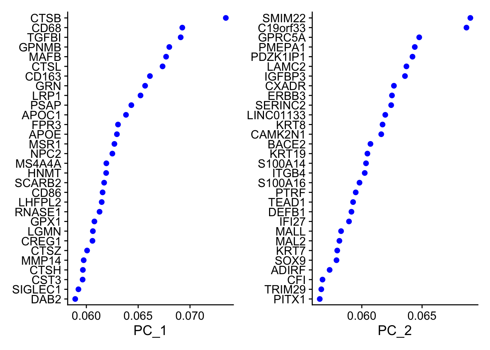
DimPlot(pdac.seurat, reduction = "pca")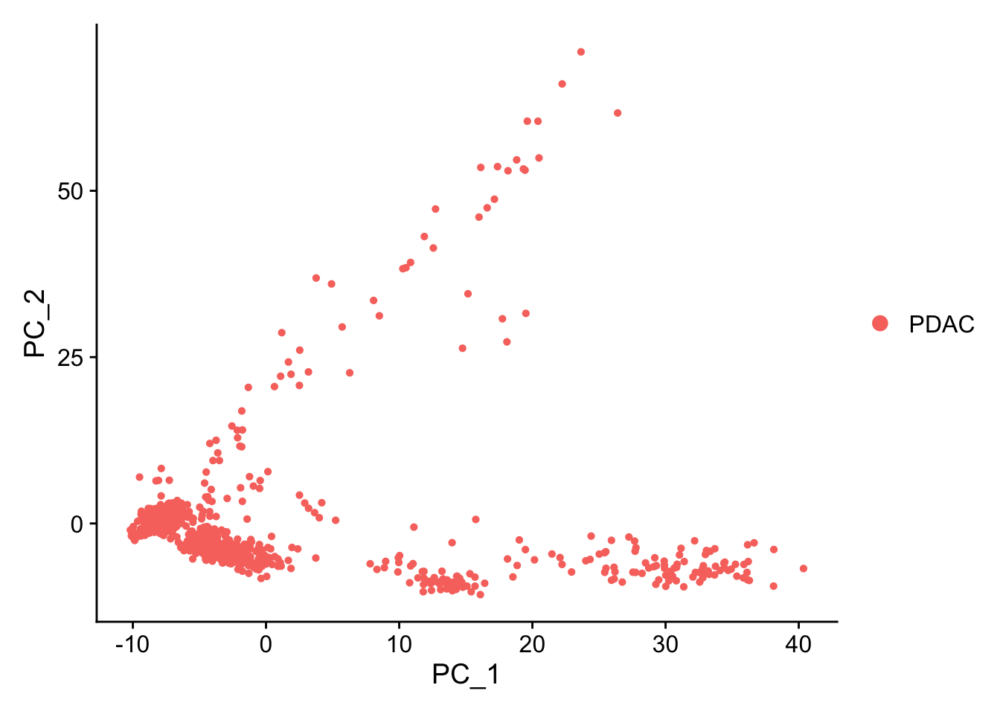
DimHeatmap(pdac.seurat, dims = 1:10, cells = 500, balanced = TRUE)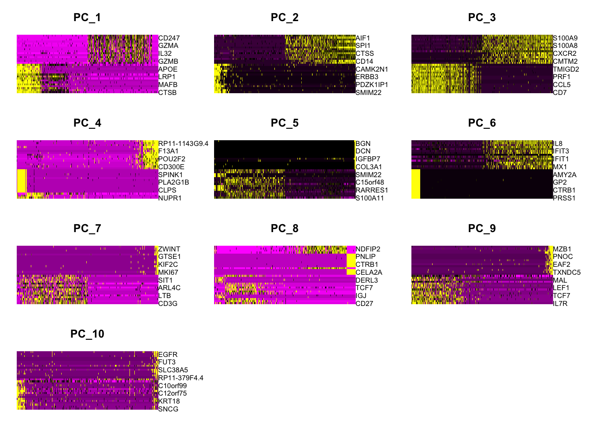
pdac.seurat## An object of class Seurat
## 19273 features across 928 samples within 1 assay
## Active assay: RNA (19273 features, 2000 variable features)
## 3 layers present: counts, data, scale.data
## 1 dimensional reduction calculated: pca3.6.2 Estimation de la Dimensionalité
Nous utilisons la méthode des valeurs propres obtenues à partir de l’ACP.
- Faire un graphe des valeurs propres
- Estimer et discuter de la dimensionalité
ElbowPlot(pdac.seurat)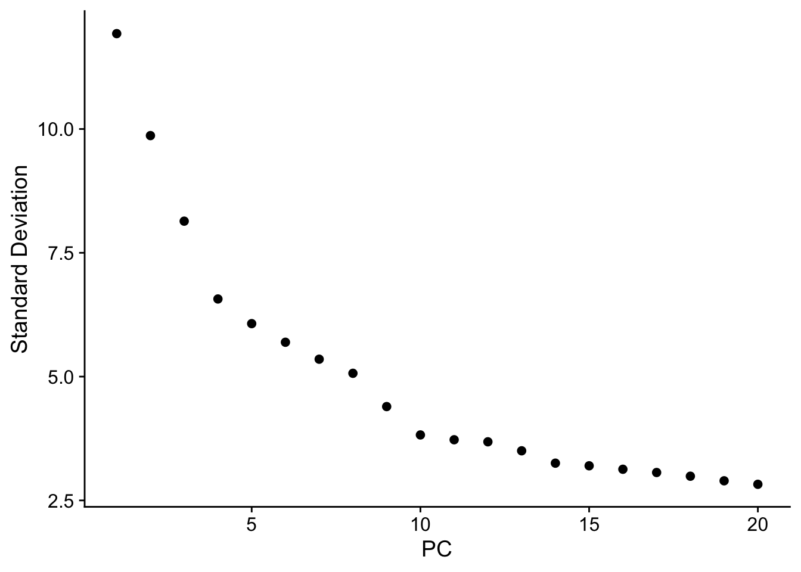
3.7 Clusteriser les cellules
- Trouver les plus proches voisins en construisant un
graphe K-nearest neighbors à l’aide de la fonction
FindNeighbors - Clusteriser les cellules en utilisant l’algorithme
de Louvain pour grouper les cellules (fonction
FindClusters) - Examiner les résultats pour les 5 premières cellules (utiliser
Idents(pdac.seurat))
3.7.1 Solution
pdac.seurat <- FindNeighbors(pdac.seurat, reduction = "pca", dims = 1:15)## Computing nearest neighbor graph## Computing SNNpdac.seurat <- FindClusters(pdac.seurat, resolution = 0.5)## Modularity Optimizer version 1.3.0 by Ludo Waltman and Nees Jan van Eck
##
## Number of nodes: 928
## Number of edges: 25631
##
## Running Louvain algorithm...
## Maximum modularity in 10 random starts: 0.9121
## Number of communities: 10
## Elapsed time: 0 secondshead(Idents(pdac.seurat), 5)## AAACGAAAGTGGAAAG-1 AAAGAACCATTAAAGG-1 AAAGGATTCGGCTTGG-1 AAAGGGCAGTAGCAAT-1
## 0 3 1 3
## AAAGGTACACATACGT-1
## 0
## Levels: 0 1 2 3 4 5 6 7 8 93.8 Exploration des clusters par UMAP
Seurat propose plusieurs techniques de réduction de dimension non linéaires, telles que t-SNE et UMAP, pour visualiser et explorer ces jeux de données. L’objectif de ces algorithmes est d’identifier la structure sous-jacente du jeu de données, afin de positionner des cellules similaires les unes près des autres dans un espace de faible dimension. Ainsi, les cellules regroupées dans les clusters définis par les méthodes de regroupement basées sur les graphes devraient “se retrouver proches” les unes des autres sur ces représentations réduites.
- Utiliser
RunUMAPsur 15 dimensions puisDimplot - Que pensez vous du nombre de clusters identifiés ?
- Sauver l’objet
pdac.seuratdans un fichier RDS pour pouvoir le réutiliser plus tard.
3.8.1 Solution
pdac.seurat <- RunUMAP(pdac.seurat, dims = 1:15)## 20:27:33 UMAP embedding parameters a = 0.9922 b = 1.112## 20:27:33 Read 928 rows and found 15 numeric columns## 20:27:33 Using Annoy for neighbor search, n_neighbors = 30## 20:27:33 Building Annoy index with metric = cosine, n_trees = 50## 0% 10 20 30 40 50 60 70 80 90 100%## [----|----|----|----|----|----|----|----|----|----|## **************************************************|
## 20:27:33 Writing NN index file to temp file /var/folders/91/6skgr68s5ls_dhqfdzs02_pm00013r/T//RtmpYvXvhN/filea93748acb073
## 20:27:33 Searching Annoy index using 1 thread, search_k = 3000
## 20:27:33 Annoy recall = 100%
## 20:27:33 Commencing smooth kNN distance calibration using 1 thread with target n_neighbors = 30
## 20:27:34 Initializing from normalized Laplacian + noise (using RSpectra)
## 20:27:34 Commencing optimization for 500 epochs, with 34120 positive edges
## 20:27:34 Using rng type: pcg
## 20:27:35 Optimization finishedDimPlot(pdac.seurat, reduction = "umap")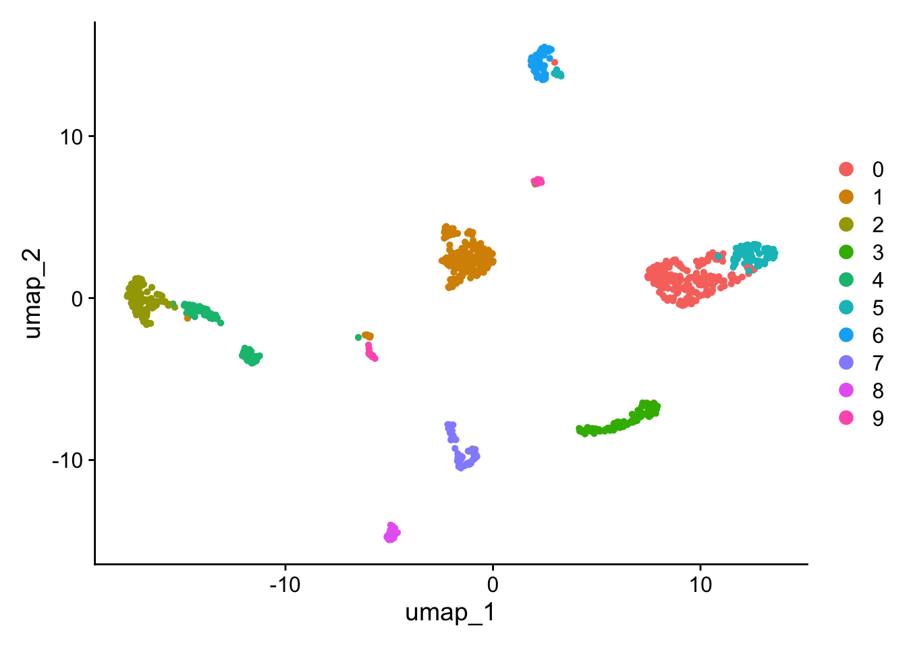
saveRDS(pdac.seurat, file = "pdac_1.rds")
# Alternative: SaveSeuratRds()
pdac.seurat## An object of class Seurat
## 19273 features across 928 samples within 1 assay
## Active assay: RNA (19273 features, 2000 variable features)
## 3 layers present: counts, data, scale.data
## 2 dimensional reductions calculated: pca, umap3.9 Visualisation des marqueurs
Cette étape permet de découvrir les types cellulaires les plus
connus. Plusieurs outils de visualisation sont pertinents pour cela: Les
Violin plots (fonction VlnPlot) et
Superposition de l’expression d’un marqueur sur l’UMAP
(Fonction Featureplot).
- Mettez en avant les cellules immunitaires par la visualisation du marqueur CD45
- Mettez en avant les types cellulaires suivants, caractérisés par les marqeurs suivants:
| Type cellulaire | Marqueur |
|---|---|
| Dendritic cells | CLU, PRSS1, HLA-DRA |
| B Cells | HLA-DRA, CD79A, MS4A1 |
| Macrophages | CD14, HLA-DRA, LYZ |
| CD8+ T cells | CD3E, NKG7, CD3D |
| CD4+ T cells | CD3E, CD3D |
| Epithelial cells | KRT18, KRT19, |
| NK cells | NKG7, GZMB |
- Faites un
Dotplotavec l’ensemble de ces marqueurs
# Plots pour CD45
VlnPlot(pdac.seurat, features = "PTPRC")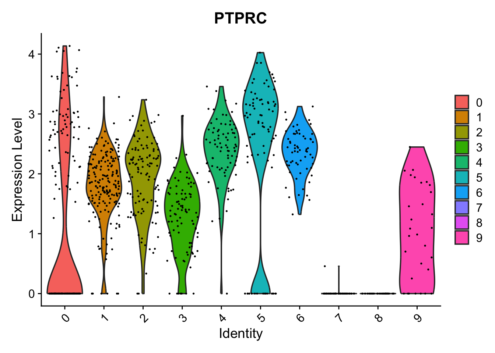
FeaturePlot(pdac.seurat, features = "PTPRC")
# On peut aussi mettre en place une analyse interactive
#FeaturePlot(pdac.seurat, features = "PTPRC", interactive = TRUE)
# Plots pour notre liste de marqeurs
genes_markers <- c(
"CLU", "PRSS1", "HLA-DRA",
"CD79A", "MS4A1",
"CD14", "LYZ",
"CD3E", "NKG7", "CD3D",
"KRT18", "KRT19",
"GZMB"
)
VlnPlot(pdac.seurat, features = genes_markers)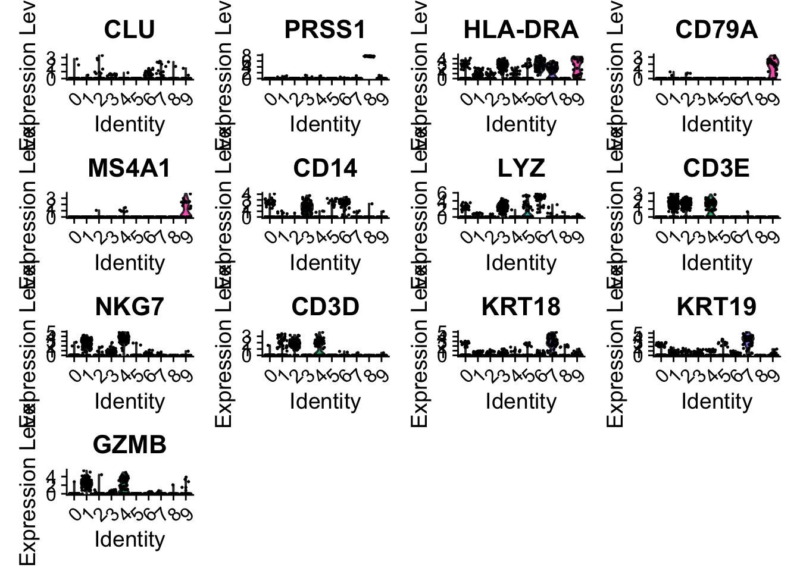
FeaturePlot(pdac.seurat, features = genes_markers)
dtplot <- DotPlot(pdac.seurat, features = genes_markers) + RotatedAxis()
plot(dtplot)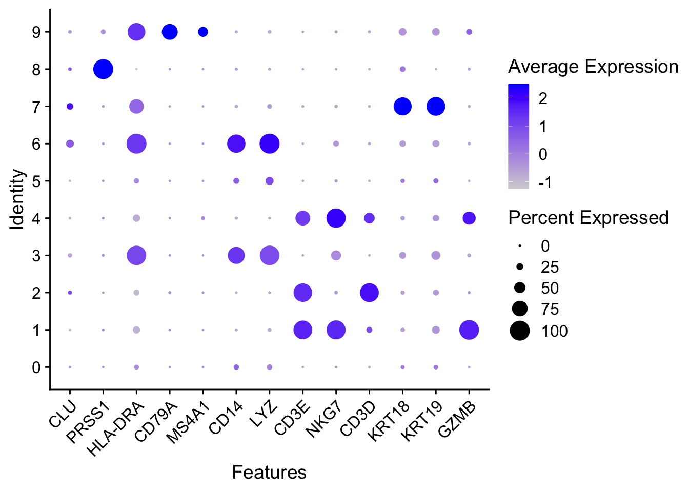
3.10 Identifier les marqueurs différentiellement exprimés
- Créer une table avec la liste des marquers
différentiellement exprimés (DE) entre le cluster 2
(désigné sous le nom de
ìdent.1 = 2) et le reste des clusters. - afficher les 10 premiers marqueurs
- Identifier les marquers DE entre le cluster 2 et le cluster 3 et afficher les 10 premiers marqueurs.
- Identifier les marqueurs de différentiation pour l’ensemble des
clusters en utilisant
FindAllMarkerspuis filtrer les marqueurs sur \(avglog2FC > 2.0\) en utilisant la librairiedplyr.
# On vérifie que l'on est bien sur le bon Ident
table(Idents(pdac.seurat))##
## 0 1 2 3 4 5 6 7 8 9
## 194 188 112 93 81 81 62 55 32 30# 1. Table avec la liste des marqueurs DE
cluster2.markers <- FindMarkers(pdac.seurat, ident.1 = 2)## For a (much!) faster implementation of the Wilcoxon Rank Sum Test,
## (default method for FindMarkers) please install the presto package
## --------------------------------------------
## install.packages('devtools')
## devtools::install_github('immunogenomics/presto')
## --------------------------------------------
## After installation of presto, Seurat will automatically use the more
## efficient implementation (no further action necessary).
## This message will be shown once per session# 2. afficher les 10 premiers marqueurs
head(cluster2.markers, n = 10)## p_val avg_log2FC pct.1 pct.2 p_val_adj
## MAL 2.901016e-120 9.118145 0.643 0.004 5.591127e-116
## IL7R 1.007071e-117 4.380175 0.920 0.065 1.940928e-113
## LEF1 1.865256e-114 6.892020 0.643 0.007 3.594907e-110
## CCR7 9.776392e-107 5.850119 0.705 0.026 1.884204e-102
## CD3G 2.724034e-103 3.019207 0.946 0.078 5.250032e-99
## CD3D 1.167385e-90 2.727310 0.938 0.100 2.249901e-86
## TCF7 6.045381e-84 4.357094 0.812 0.102 1.165126e-79
## CD27 8.387488e-79 3.082440 0.732 0.062 1.616520e-74
## PRKCQ-AS1 1.006525e-72 4.120219 0.723 0.085 1.939876e-68
## BCL11B 1.472182e-71 3.818475 0.652 0.056 2.837337e-67# 3. pareil pour les cluster 2 et cluster s3
cluster2.3.markers <- FindMarkers(pdac.seurat, ident.1 = 2, ident.2 = 3)
head (cluster2.3.markers, n = 10)## p_val avg_log2FC pct.1 pct.2 p_val_adj
## GPNMB 5.341285e-40 -8.552400 0.027 0.989 1.029426e-35
## CD68 8.306483e-40 -9.339173 0.009 0.978 1.600909e-35
## LYZ 1.674663e-39 -9.233372 0.018 0.978 3.227578e-35
## PLAUR 1.723876e-39 -6.612930 0.071 1.000 3.322426e-35
## C15orf48 6.927291e-39 -7.881700 0.018 0.968 1.335097e-34
## FCER1G 2.039545e-38 -6.028574 0.036 0.978 3.930816e-34
## GNS 2.607417e-38 -6.402631 0.036 0.968 5.025276e-34
## CTSL 3.686963e-38 -7.463309 0.152 1.000 7.105883e-34
## TYROBP 5.626096e-38 -6.928897 0.054 0.968 1.084317e-33
## TIMP2 5.816277e-38 -6.453160 0.054 0.968 1.120971e-33# 4. marqueurs pour l'ensemble des clusters
pdac.all.markers <- FindAllMarkers(pdac.seurat, only.pos = TRUE)## Calculating cluster 0## Calculating cluster 1## Calculating cluster 2## Calculating cluster 3## Calculating cluster 4## Calculating cluster 5## Calculating cluster 6## Calculating cluster 7## Calculating cluster 8## Calculating cluster 9# Filtrage du resultat (logFC>1) et tri par cluster
library(dplyr)##
## Attaching package: 'dplyr'## The following objects are masked from 'package:stats':
##
## filter, lag## The following objects are masked from 'package:base':
##
## intersect, setdiff, setequal, unionpdac.all.markers %>% dplyr::group_by(cluster) %>% dplyr::filter(avg_log2FC > 2.0) -> filtered_markers3.11 Représentation de l’expression sous forme de heatmap
- Faire une représentation heatmap des gènes de notre
liste
genes_markers(fonctionDoHeatmap) - Faire une représentation des 10 gènes les plus DE
caractérisant chaque cluster (appliquer les fonctions
group_by,filter,slice_headetungroupdu packagedplyr)
3.11.1 Solution
# heatmap liste marqueurs
DoHeatmap(pdac.seurat, features = genes_markers) + NoLegend()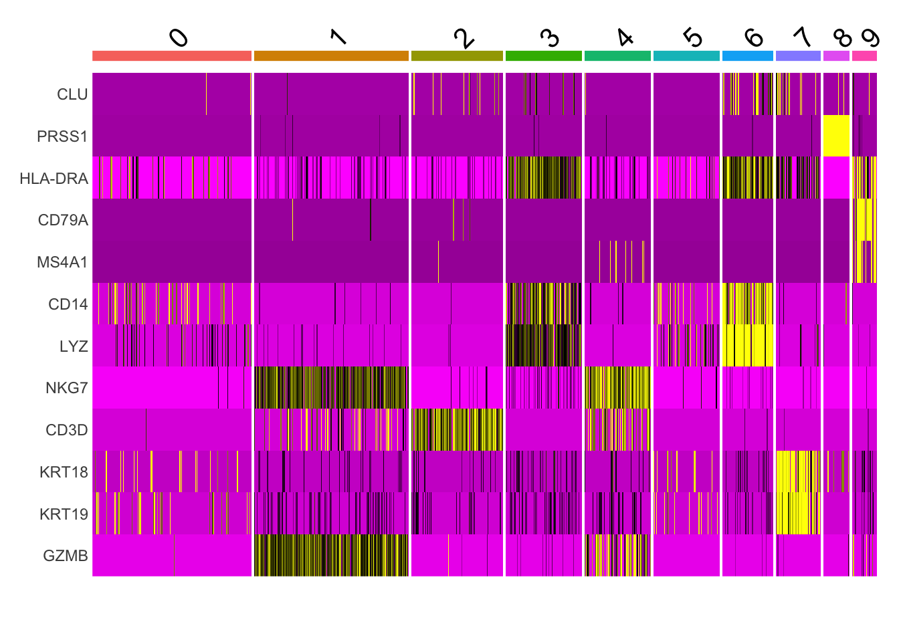
# heatmap du top10 genes DE pout tous les clusters
library(dplyr)
pdac.all.markers %>%
dplyr::group_by(cluster) %>%
dplyr::filter(avg_log2FC > 1) %>%
dplyr::slice_head(n = 10) %>%
dplyr::ungroup() -> top10
DoHeatmap(pdac.seurat, features = top10$gene) + NoLegend()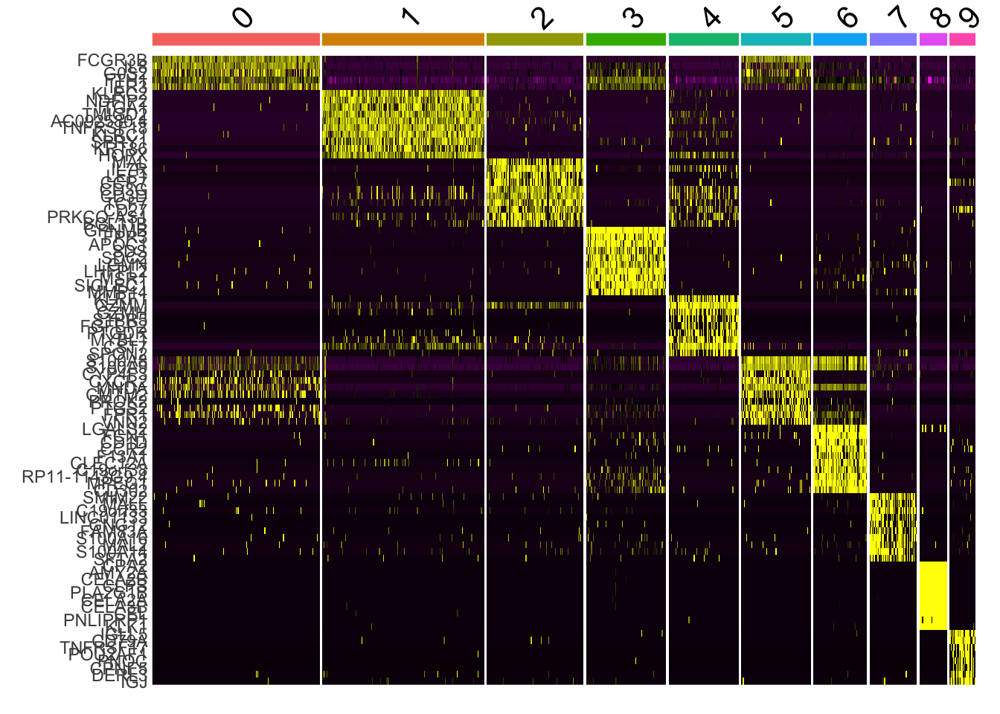
3.12 Exemple
d’utilisation de AddmoduleScore
Calcul du score de la signature ‘TOP10’
activation_genes <- top10
pdac.seurat <- AddModuleScore(
pdac.seurat,
features = list(activation_genes),
name = "TActivation"
)Plot du score
FeaturePlot(
pdac.seurat,
features = "TActivation1",
cols = c("lightgrey", "red"),
reduction = "umap"
)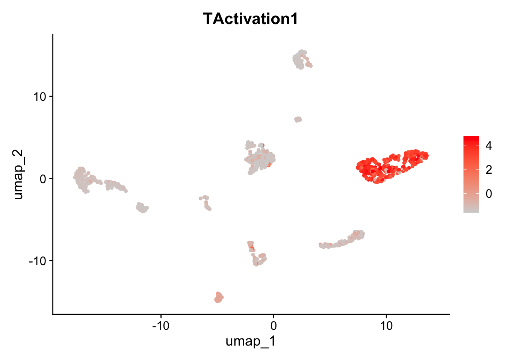
4 Session Info
sessionInfo()## R version 4.5.1 (2025-06-13)
## Platform: aarch64-apple-darwin20
## Running under: macOS Sequoia 15.7.1
##
## Matrix products: default
## BLAS: /Library/Frameworks/R.framework/Versions/4.5-arm64/Resources/lib/libRblas.0.dylib
## LAPACK: /Library/Frameworks/R.framework/Versions/4.5-arm64/Resources/lib/libRlapack.dylib; LAPACK version 3.12.1
##
## locale:
## [1] en_US.UTF-8/en_US.UTF-8/en_US.UTF-8/C/en_US.UTF-8/en_US.UTF-8
##
## time zone: Europe/Paris
## tzcode source: internal
##
## attached base packages:
## [1] stats graphics grDevices datasets utils methods base
##
## other attached packages:
## [1] dplyr_1.1.4 future_1.67.0 Seurat_5.3.1 SeuratObject_5.2.0
## [5] sp_2.2-0
##
## loaded via a namespace (and not attached):
## [1] deldir_2.0-4 pbapply_1.7-4 gridExtra_2.3
## [4] rlang_1.1.6 magrittr_2.0.4 RcppAnnoy_0.0.22
## [7] otel_0.2.0 spatstat.geom_3.6-0 matrixStats_1.5.0
## [10] ggridges_0.5.7 compiler_4.5.1 png_0.1-8
## [13] vctrs_0.6.5 reshape2_1.4.4 stringr_1.5.2
## [16] pkgconfig_2.0.3 fastmap_1.2.0 labeling_0.4.3
## [19] promises_1.5.0 rmarkdown_2.30 purrr_1.1.0
## [22] xfun_0.54 cachem_1.1.0 jsonlite_2.0.0
## [25] goftest_1.2-3 later_1.4.4 spatstat.utils_3.2-0
## [28] irlba_2.3.5.1 parallel_4.5.1 cluster_2.1.8.1
## [31] R6_2.6.1 ica_1.0-3 spatstat.data_3.1-9
## [34] bslib_0.9.0 stringi_1.8.7 RColorBrewer_1.1-3
## [37] limma_3.64.3 reticulate_1.44.0 spatstat.univar_3.1-4
## [40] parallelly_1.45.1 lmtest_0.9-40 jquerylib_0.1.4
## [43] scattermore_1.2 Rcpp_1.1.0 knitr_1.50
## [46] tensor_1.5.1 future.apply_1.20.0 zoo_1.8-14
## [49] R.utils_2.13.0 sctransform_0.4.2 httpuv_1.6.16
## [52] Matrix_1.7-4 splines_4.5.1 igraph_2.2.1
## [55] tidyselect_1.2.1 abind_1.4-8 rstudioapi_0.17.1
## [58] yaml_2.3.10 spatstat.random_3.4-2 codetools_0.2-20
## [61] miniUI_0.1.2 spatstat.explore_3.5-3 listenv_0.10.0
## [64] lattice_0.22-7 tibble_3.3.0 plyr_1.8.9
## [67] withr_3.0.2 shiny_1.11.1 S7_0.2.0
## [70] ROCR_1.0-11 evaluate_1.0.5 Rtsne_0.17
## [73] fastDummies_1.7.5 survival_3.8-3 polyclip_1.10-7
## [76] fitdistrplus_1.2-4 pillar_1.11.1 BiocManager_1.30.26
## [79] KernSmooth_2.23-26 renv_1.1.5 plotly_4.11.0
## [82] generics_0.1.4 RcppHNSW_0.6.0 ggplot2_4.0.0
## [85] scales_1.4.0 globals_0.18.0 xtable_1.8-4
## [88] glue_1.8.0 lazyeval_0.2.2 tools_4.5.1
## [91] data.table_1.17.8 RSpectra_0.16-2 RANN_2.6.2
## [94] dotCall64_1.2 cowplot_1.2.0 grid_4.5.1
## [97] tidyr_1.3.1 nlme_3.1-168 patchwork_1.3.2
## [100] cli_3.6.5 spatstat.sparse_3.1-0 spam_2.11-1
## [103] viridisLite_0.4.2 uwot_0.2.3 gtable_0.3.6
## [106] R.methodsS3_1.8.2 sass_0.4.10 digest_0.6.37
## [109] progressr_0.17.0 ggrepel_0.9.6 htmlwidgets_1.6.4
## [112] farver_2.1.2 R.oo_1.27.1 htmltools_0.5.8.1
## [115] lifecycle_1.0.4 httr_1.4.7 statmod_1.5.1
## [118] mime_0.13 MASS_7.3-65
Cette œuvre est mise à disposition selon les termes de la
Licence
Creative Commons:
Attribution - Pas d’Utilisation Commerciale -
Pas de Modification 4.0 International (CC BY-NC-ND 4.0).